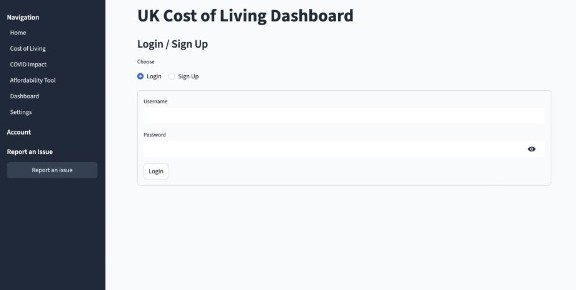
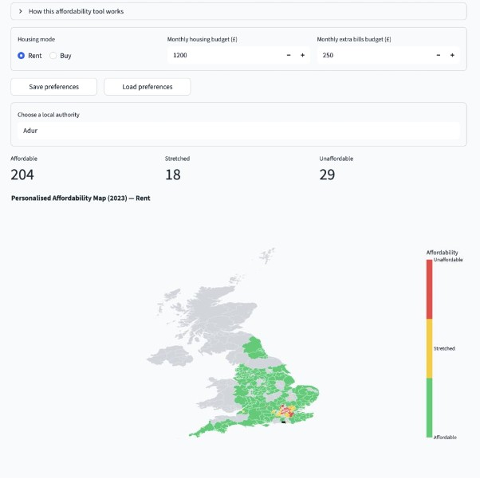
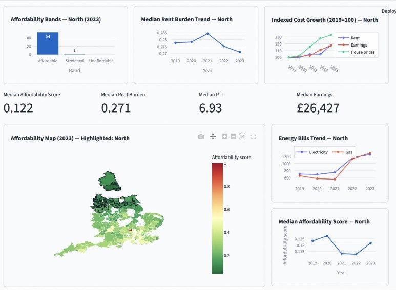

UK Housing Affordability Analysis
Python | Plotly | PostgreSQL | Streamlit
Project Overview
This project was developed as part of my final-year Computer Science dissertation, titled The North-South Divide: A Data-Driven Analysis of the Cost-of-Living Crisis in England.
The project investigated housing affordability and wider cost-of-living trends across England between 2019 and 2023, focusing on regional differences, the North-South divide and changes during the COVID-19 period.
Using Python, PostgreSQL and Streamlit, I developed a multi-page analytical web application that brings together economic datasets and presents them through interactive visualisations, regional comparisons and a personalised affordability tool.
Project Availability
Due to sensitive personal information being included in the source code of this project, a GitHub repository is not publicly available. Screenshots have been used to display some of the more significant pages from the app. These images were extracted from the original documentation and do not scale well to higher resolutions. Apologies for this!
Home Page
The home page, displaying the login and signup form, as well as the
navigation to all of the different pages.

Data & Technologies
The project included collecting, cleaning and integrating datasets covering earnings, house prices, rental costs, inflation and utility expenses, all at local authority level. This data was collected from the Office for National Statistics (ONS) and imported into a PostgreSQL relational database, where it was organised into a table organised by date, local authority and broader region.
Python was used for data processing and analysis, Plotly was used to develop the interactive visualisations, whilst Streamlit was used to create the web application in which they were displayed. Visualisations primarily included time-series charts, distribution plots, scatter plots and choropleth maps. Most visualisations were customisable using widgets, allowing users to personalise the metric displayed.
The OpenAI API was used to generate insights for users. This feature was added so that users with less experience in data analysis could receive personalised insights when customising the metrics displayed in the visualisations.
Interactive Affordability Tool
A key feature of the application was an interactive tool allowing users to assess housing affordability across local authorities based on their own budgets.
Users could select whether they intended to rent or buy, and enter monthly budgets for housing and household bills. The combined budget was used to assess affordability across different areas. If users selected to buy, they could specify which type of property they wanted to buy, but equivalent data was not accessible for rental properties.
Results were displayed on an interactive map, categorising local authorities as affordable, stretched or unaffordable. Users could also select a specific local authority to highlight it and view additional affordability statistics and a calculated affordability score.
Affordability Tool
The affordability tool, displaying customisable metrics and a map showing which
local authorities were affordable based on the selected budgets. The blank areas
represent local authorities with inconsistent or missing data that could not be
included in the dataset.

Analysis & Visualisation
The application included several analytical pages exploring regional affordability differences, historical trends and relationships between economic variables. These allowed users to investigate changes between 2019 and 2023, including the differences between housing costs and earnings.
A regional dashboard provided interactive visualisations for selected areas, while optional AI-generated insights helped users interpret patterns and identify notable observations within the data.
Regional Dashboard
The regional dashboard displaying key information for
each broader region. Although not shown in the image,
users could select between the North, Midlands and South.

Key Findings
It would be impossible to talk about all of the findings as this project took up around 3 months of my life!
These are the most notable findings:
The analysis identified a consistent North–South divide in housing affordability, with the South experiencing significantly higher housing costs relative to earnings. London boroughs showed particularly high affordability pressures and considerable variation between local authorities. However, the gap has not increased or decreased significantly over the period analysed, with both regions experiencing a decline in affordability at a similar rate.
Kensington and Chelsea had the worst housing affordability, with average house prices reaching approximately 40 times average annual earnings in 2023.
Average earnings in the North and Midlands are very similar, but the North generally shows significantly better housing affordability due to lower housing costs.
Project Outcomes & Limitations
I wanted the completed application to not only be a place for me to display my own findings, but also a platform where users could explore the data themselves. I believe I accomplished this through highly personalised visualisations and user-friendly insights.
The main limitation of the project was the inconsistency of the data, with missing values resulting in several local authorities being excluded from the analysis. This could have affected the accuracy of some findings. There were also certain metrics I could not include, either because the ONS did not collect the relevant data or because too many local authorities had missing values, which would have significantly affected the analysis.
This was by far the largest project I had ever completed, involving over 4000 lines of python code, and it was an extremely valuable learning experience. As stressful as it was, looking back on it makes me extremely proud, and it was one of the main reasons I was able to achieve a First-Class Honours degree!